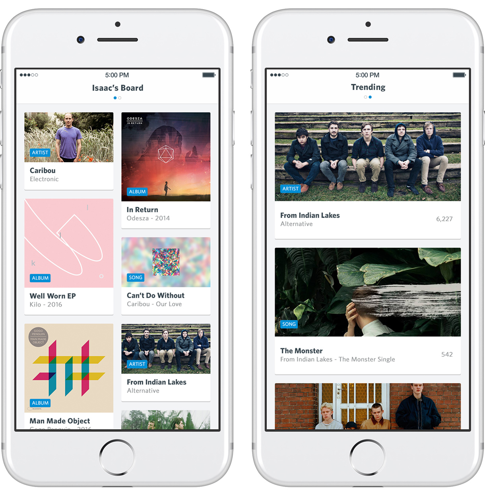
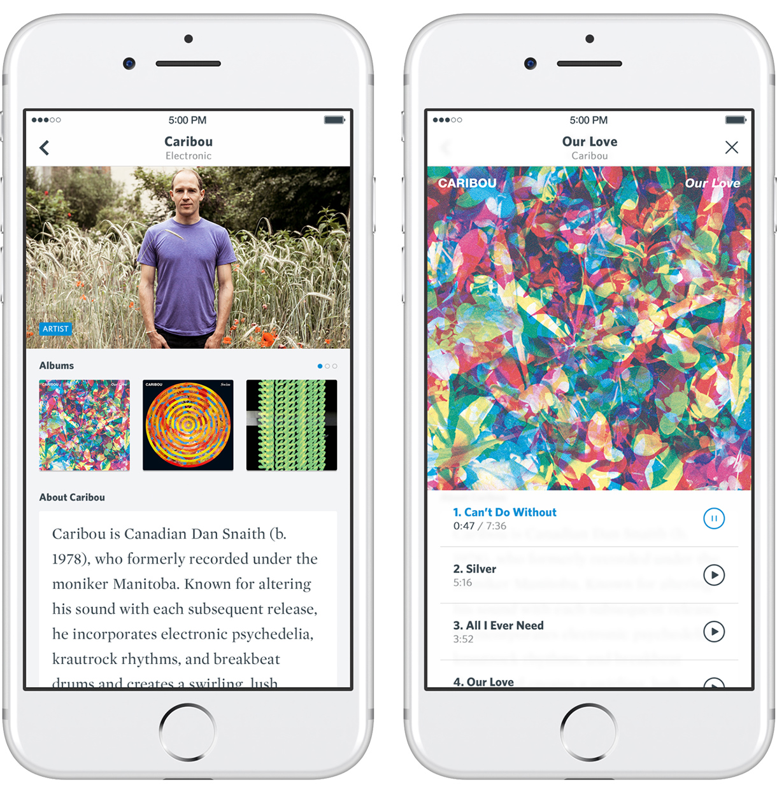
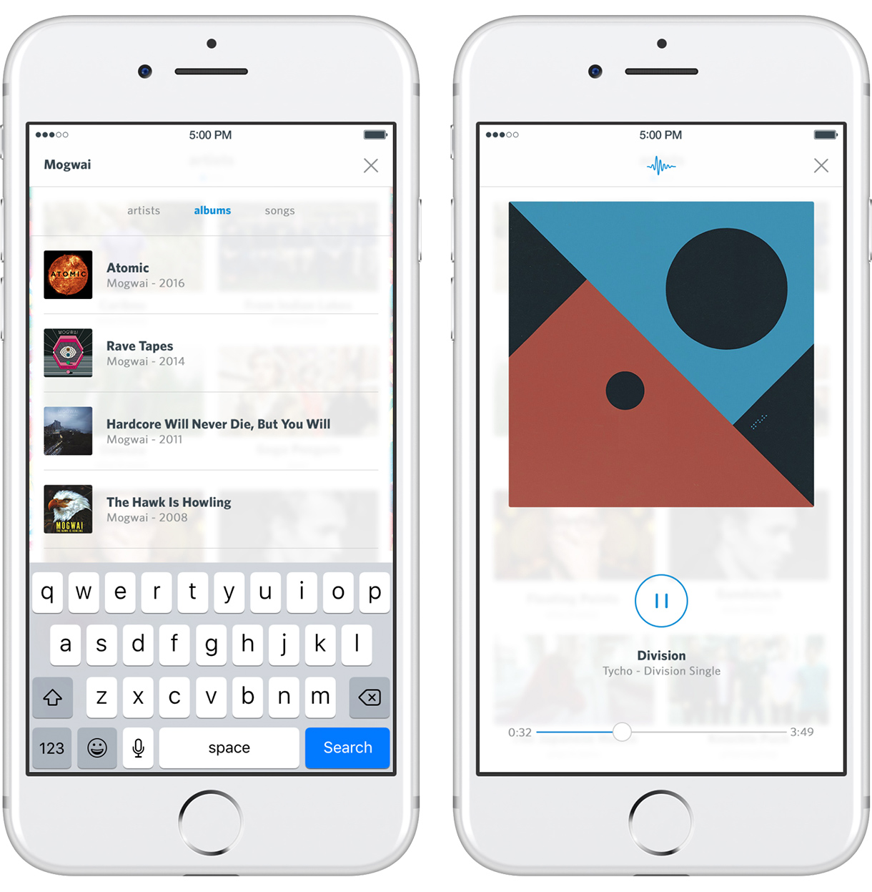

chriseddie.com / Amazon
chriseddie.com / Amazon
Atlas Music Board
Atlas (working title) is a visual pinboard for music discovery and exploration. Users can search millions of songs in the Apple MusicKit database and pin their favorite discoveries to a board that can be shared with friends. Additionally, it identifies trending artists, albums, and songs.
This is a reimagined metaphor and design for my app Listenlist.

Main pinboard and trending artists, albums, and songs.
Users can tap on pinned items to see more details, listen to full album discographies, and read biographies about artists.

Artist and album detail screens.
A minimalistic UI allows for simplistic search and playback functionality that floats on top of the interface in a modal view.

Search and now playing modal.
Date: 2011 - 2012
Company: Arboreal, LLC
Project: Atlas (Listenlist 2.0)
Role: Co-Founder / Design
Team: Isaac Overacker: Co-Founder / Development